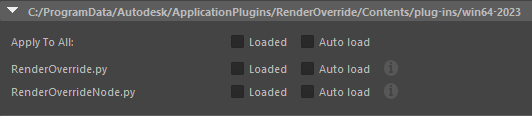
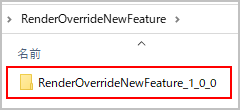

新バージョンのモニター¶
モニターについて¶
本ソフトウェアの新バージョンのリリースを前に、モニターを募集しています
実際にツールを使用していただき、使用感のフィードバックやバグの報告をお願いしております
モニターの方には、開発者より新バージョンのプログラムファイルとライセンスをお送りします
ライセンスが有効な間、商用利用することができます
既にサブスクリプション契約をされている方は、モニター期間中は契約を一時中断して頂いて構いません
中断の設定を行わないと、使用料が引き続き引き落とされるのでご注意ください
モニター期間終了後に引き続き商用利用される場合は、再度サブスクリプションのご契約をお願いします
有効期間については、ライセンス受取り時に開発者に確認するか、ライセンスファイルの中身から確認することができます

ライセンスファイルは、
C:/ProgramData/Autodesk/ApplicationPlugins/RenderOverride/Contents内にあります¶
条件など¶
対象者 |
開発者が認めた者(自薦、他薦問わず) |
報酬 |
開発者から、モニターへの謝礼はなし |
報告 |
使用感のフィードバック、バグの報告 |
期間 |
1-3ヵ月程度 (延長あり) |
謝礼はありませんが、最新のバージョンをいち早く、無料で使えるというメリットがあります
新しいバージョンのインストール/ 削除方法¶
インストール¶
既にRenderOverrideを使用しており、 Plug-in Manager の
Auto Loadにチェックが入っている場合は、チェックを外してください既にインストールされている実行ファイルと、新しいバージョン(テスト用プログラム)の実行ファイルの衝突を防ぐために、予めチェックを外しておきます
既にインストールされている、正規版のアプリはアンインストールする必要はありません

新しいバージョンのプログラムファイルは、zip圧縮したものを個別に共有します
配布されたzipファイルを解凍してください

解凍されたフォルダの中に、
RenderOverrideNewFeature_[VERSION]という名前のフォルダが入っています。(AutodeskAppStoreからインストールしたフォルダと被らないような名前になっています)RenderOverrideNewFeature_[VERSION]フォルダを、C:/ProgramData/Autodesk/ApplicationPlugins/にコピーしてください
コピー後にMaya®を起動し、 Plug-in Manager を確認すると、
RenderOverrideNewFeature_[VERSION]の項目がありますので、ロードしてください正常にロードされると、通常の製品版と同じように使用することができます